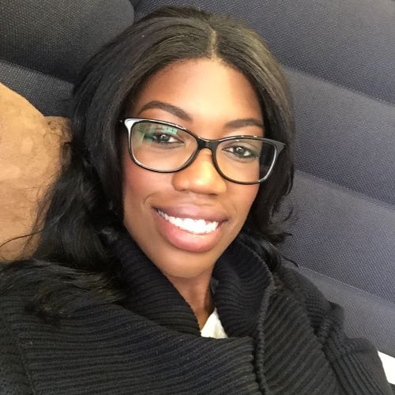
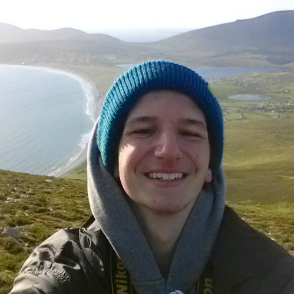
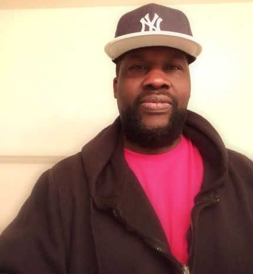

SHUAYB FARAH
Shuayb enjoys helping old ladies across the road. He is patient and kind. He is currently and was always single. Shuayb's best friend is no one at the moment.

CHELSEA JAMES
Professed "Citizen of the World", Chelsea combines her avid sense of adventure and love for full stack developing to arrange the perfect trek for each client. With multiple years in event planning and management, she can turn your dream into a comprehensive itinerary.
"Not All Who Wander Are Lost" is her favorite quote. Chelsea believes that everyone should step out of their comfort zone to experience the world's breathtaking views.

LAWRENCE JONES
A commercially minded full-stack developer, Lawrence is a Northeast Ohio native who has also lived, studied, and worked in the United Kingdom, China, and Poland. When not programming or helping our clients plan their perfect journey, he can be found around the world enjoying a baseball game at Progressive Field in Cleveland, enjoying a pint in London, or listening to Chopin in Warsaw's Łazienki Park.

TYLER KOENIG
Tyler, a creative software developer with a strong command of HTML, CSS, & Java is also an avid explorer. His favorite locations include the Grand Canyon and Ireland's idyllic Cliff's of Moher. Spending his leisure time hiking, biking, four-wheeling, and kayaking across the world, Tyler is an expert in "off-the-beaten-path" treks.

DAVID SENABUYLA
Is a software developer.